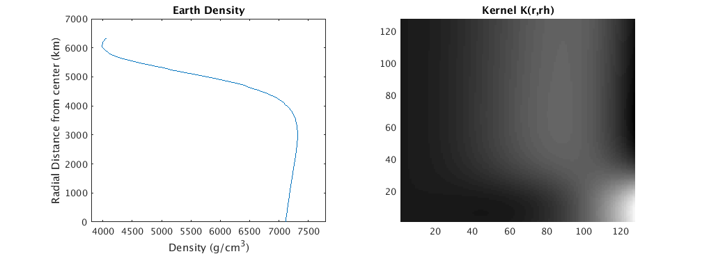
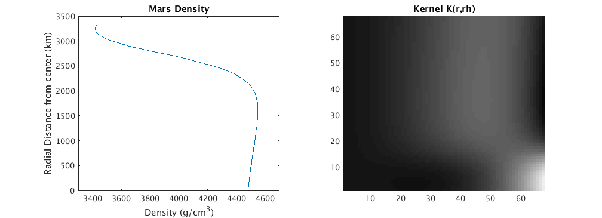

r = sym('r');
Md = (4.*pi.*r.^2);
Id = ((8/3).*pi.*r.^4);
G = [Md; Id];
M = int(Md,r);
I = int(Id,r);
Re = 6.3708e6;
Me = 5.972e24;
Ie = 8.034e37;
d = [Me; Ie];
q1 = eval(int(Md,r, 0, Re));
q2 = eval(int(Id,r, 0, Re));
q = [q1; q2];
Ri = [0:50000:Re];
mest_all = [];
k_all = [];
for i=1:length(Ri)
ri = Ri(i);
H0 = G*G'*((r-ri).^2);
H = eval(int(H0, 0, Re));
c = (inv(H)*q)./(q'*inv(H)*q);
mest = c'*d;
mest_all = [mest_all; mest];
k(r) = c'*G;
k_all = [k_all; eval(k(Ri))];
end
figure('units','normalized','outerposition',[0 0 .7 .5]);
subplot(1,2,1)
plot(mest_all, Ri./1e3);
title('Earth Density');
xlabel('Density (g/cm^3)');
ylabel('Radial Distance from center (km)');
xlim([3800 7800]);
subplot(1,2,2)
pcolor(flipud(k_all)); shading flat;
colormap gray
title('Kernel K(r,rh)');
Re = 3.389e6;
Me = 0.642e24;
Ie = 2.709e36;
d = [Me; Ie];
q1 = eval(int(Md,r, 0, Re));
q2 = eval(int(Id,r, 0, Re));
q = [q1; q2];
Ri = [0:50000:Re];
mest_all = [];
k_all = [];
for i=1:length(Ri)
ri = Ri(i);
H0 = G*G'*((r-ri).^2);
H = eval(int(H0, 0, Re));
c = (inv(H)*q)./(q'*inv(H)*q);
mest = c'*d;
mest_all = [mest_all; mest];
k(r) = c'*G;
k_all = [k_all; eval(k(Ri))];
end
figure('units','normalized','outerposition',[0 0 .7 .5]);
subplot(1,2,1)
plot(mest_all, Ri./1e3);
title('Mars Density');
xlabel('Density (g/cm^3)');
ylabel('Radial Distance from center (km)');
xlim([3300 4700]);
subplot(1,2,2)
pcolor(flipud(k_all)); shading flat;
colormap gray
title('Kernel K(r,rh)');
 